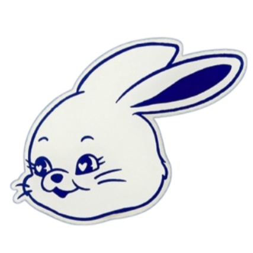
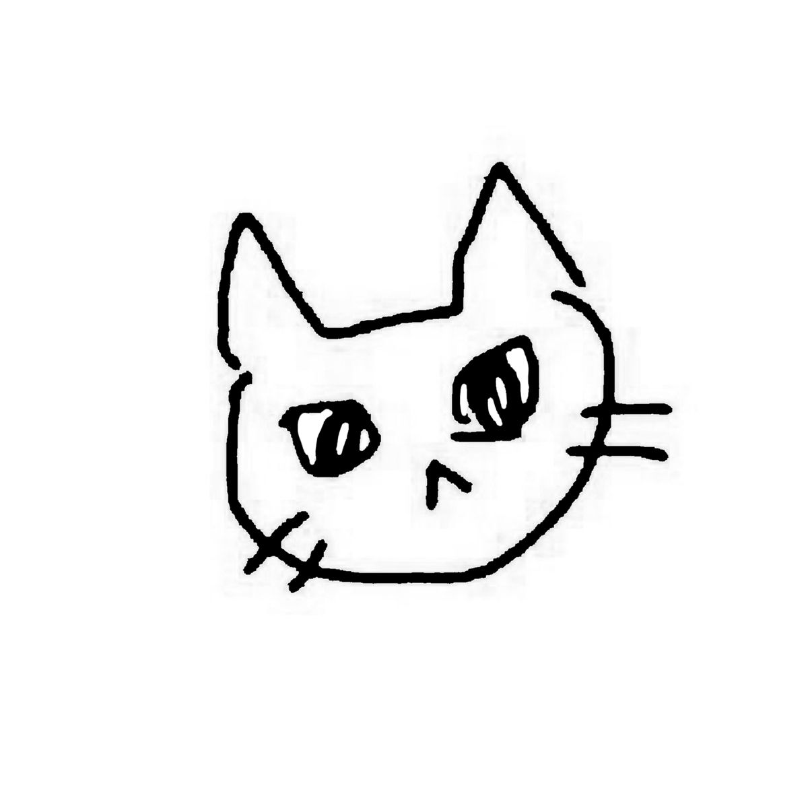

New Jean5 Synthesizer
by: @euginini06_


cat.jpg didn't load — check the exact filename/capitalization in your repo (GitHub Pages is case-sensitive)
press letsgo to start
video ready — tap to download
letsgo
⛶
0 / 8 words